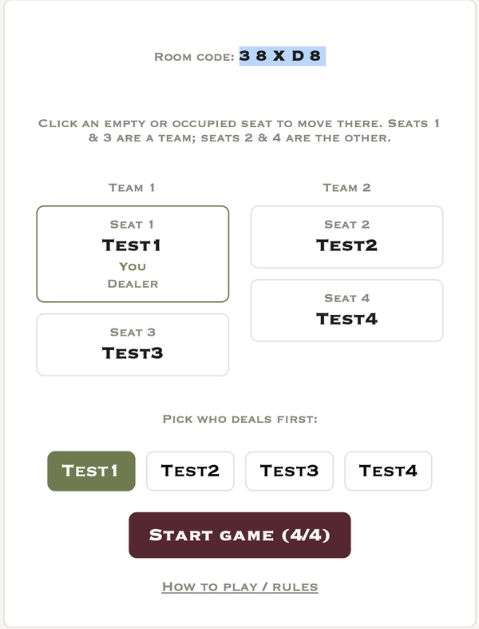
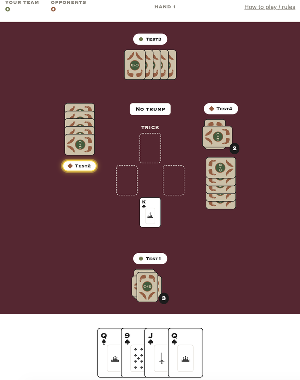
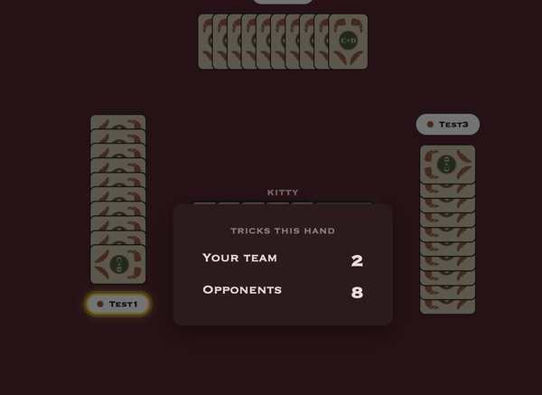
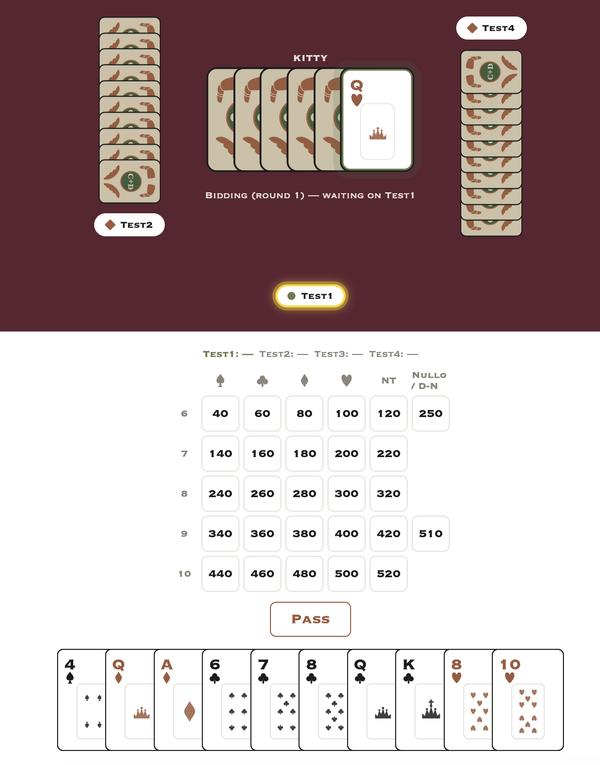
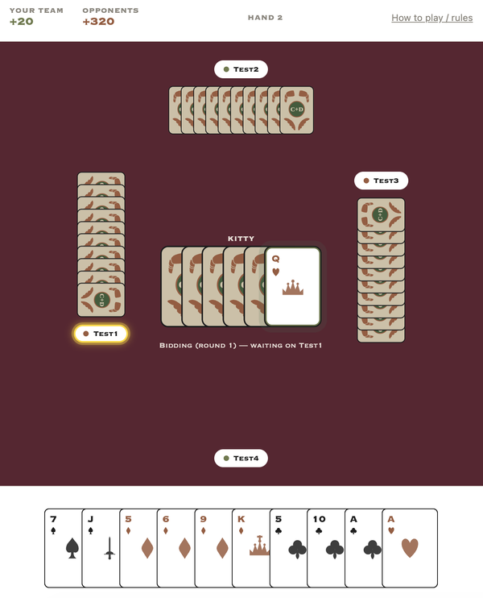
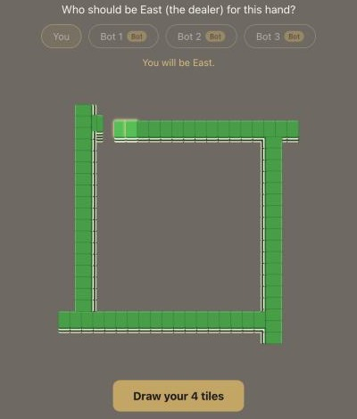

I built nine browser tools that carry a product initiative from customer context to a draft delivery plan and a Jira import file. Each tool hands a structured record to the next, and code checks the prioritization math, the funding cutoff, requirement coverage, unconfirmed assumptions, batch load, and dependency order. A person starts and reviews every step.
Scope. The tools support Product Management work; designing them was Product Operations work. Background: where this sits between AI assistance and agentic operations, the proposed architecture, and how the tools were rebuilt.
Each card says what the tool drafts, what the code checks, and what a person has to review.
Shows how a persona card built around a Jobs to Be Done statement is structured, using four samples. No AI call; it doesn't build a persona from your own input yet.
Maps the customer journey stage by stage and passes opportunity seeds to intake. Optional AI fill; opens with a PetHealth example.
Four AI calls: weigh the initiative against competing ones, draft candidate epics, record their riskiest assumptions, and propose how to measure benefits.
Drafts a business case for each epic, with a rough effort estimate the prioritizer uses.
Two AI calls propose WSJF and RICE inputs. The tool ranks the epics and draws a funding cutoff.
One AI call proposes a milestone plan over up to 18 months, funded epics first.
Two AI calls draft a business requirements document (BRD) for one funded epic and mark each requirement explicit, inferred, or assumed.
Five AI calls draft features, stories with acceptance criteria, a solution outline, security and user-acceptance test plans, and documentation.
Two AI calls draft MVP scope, a batch plan, baseline and worst-case estimates, and a RAID log (risks, assumptions, issues, dependencies), then export a CSV for Jira’s bulk import. A batch is a regular delivery cycle of 2 days to 2 weeks; the default is 2 weeks.
An experiment in laying a V2MOM (vision, values, methods, obstacles, measures) onto a Hoshin Kanri X-matrix, with an optional AI cleanup pass.
A self-assessment across nine dimensions, five product operations indicators and the four DORA delivery metrics. You paste its output into an AI tool for analysis.
How I design a product workflow: what each step hands to the next, where a person has to decide, and which checks belong in code instead of a model. In a production version, the funding decision, requirement sign-off, and the Jira import would stay with named people; and I would recommend full automation for the evidence gathering, formatting, and coverage check.
It doesn’t show customer adoption, production reliability, enterprise integration, security approval, or measured business outcomes.
500 is the card game I've played with the same group of friends since college. It's simpler than bridge, more interesting than euchre. The existing online versions are buggy, clumsily monetized, and don't follow our house rules. I've wanted to build my own since I was working in the Java games division at Nokia. That was twenty years ago. I finally built it in two days with Claude.
No accounts, no server, no database. Share a room code; play from anywhere. Four players, peer-to-peer, entirely in the browser.





Its main purpose is a tutorial mode for learners that walks through setting up the wall the way it’s done at a real table: rolling to choose East, counting around the table and into the wall to find the break, breaking the wall, and dealing the tiles out in turn. None of the digital mahjong games I’ve found teach wall setup, and it’s the biggest barrier to playing in person.
Hong Kong rules with faan scoring. You can also play a hand against bots; four-player online play is part of what’s in beta testing.
